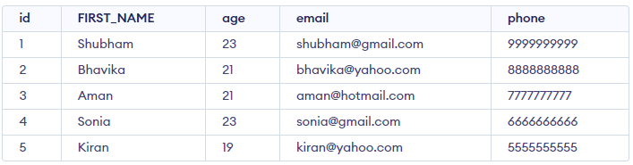

This MySQL Tutorial is made for both beginners and experienced professionals. Whether you’re starting with MYSQL basics or diving into advanced concepts, this free tutorial is the ideal guide to help you learn and understand MYSQL, no matter your skill level.
From setting up your database to performing complex queries and database administration tasks, we’ll guide you through each step with clear explanations and practical examples. Dive into our MySQL tutorial and discover how to manage and optimize your databases efficiently, ensuring robust data management for your applications.
A database is a digital system designed for the storage and arrangement of data. Think of it as an online filing system that allows you to store and quickly access a vast amount of information. Databases facilitate the efficient management of data, enabling the simple addition, modification, removal, and access of information. They serve numerous uses such as websites, applications, and enterprises to manage extensive data in an organized and secure manner.
Databases can be classified into several types based on their structure and usage. The most common types include relational databases, which organize data into tables with rows and columns, and non-relational databases, which store data in formats like documents, key-value pairs, or graphs.
Relational databases use SQL for querying and managing data. Examples include MySQL and PostgreSQL. Non-relational databases, also known as NoSQL databases, include MongoDB and Cassandra, which are designed for handling unstructured data and scaling horizontally.
Another type of database is the object-oriented database, which stores data in objects as used in object-oriented programming languages. Understanding the different types of databases helps in choosing the right database system for specific application needs.
MySQL is an open-source Relational Database Management System (RDBMS) that uses Structured Query Language (SQL) to manage data. Developed by MySQL AB and now owned by Oracle Corporation, it’s widely used due to its reliability, speed, and ease of use. MySQL is a key component in many web applications, forming the backbone of popular websites and services.
It allows users to create, modify, and maintain databases, supporting operations like data insertion, querying, updating,and deletion. Ideal for both small and large-scale applications, MySQL powers various types of systems, from personal projects to complex enterprise environments.
MySQL is a Relational Database Management System (RDBMS) software that provides many features, which are as follows:
SQL CREATE DATABASE statement creates a new database in SQL-based DBMS.
The CREATE DATABASE query in SQL, is used to create a new database in the database management system. It is also used in MySQL and other relational database management systems (RDBMS) to create databases.
The syntax to use the CREATE DATABASE command in SQL is:
CREATE DATABASE database_name;
In SQL, the `DROP TABLE` statement is used to delete an entire table from the database permanently. When you drop a table, all the data within the table, as well as the table structure itself, are removed. This action is irreversible, meaning that once the table is dropped, it cannot be recovered unless there is a backup. The syntax is straightforward: `DROP TABLE table_name;`. It's important to exercise caution when using this command, as it will delete all records and any relationships associated with the table.
Syntax:
DROP USER 'user'@'host';
Parameters:
‘user_name’@’host_name’.
The `DELETE` statement in SQL is used to remove one or more rows from a table based on a specified condition. Unlike `DROP TABLE`, which removes the entire table structure and its data, `DELETE` only affects the rows within the table while preserving the table's structure. The syntax for the `DELETE` statement is: `DELETE FROM table_name WHERE condition;`. If no condition is specified, all rows in the table will be deleted, but the table itself and its structure will remain intact. It’s important to use the `WHERE` clause to target specific rows to avoid accidentally deleting more data than intended.
SQL DELETE is a basic SQL operation used to delete data in a database. SQL DELETE is an important part of database management DELETE can be used to selectively remove records from a database table based on certain conditions. This SQL DELETE operation is important for database size management, data accuracy, and integrity.
Syntax:
DELETE FROM table_name
WHERE some_condition;
Parameter Explanation:
Note: We can delete single as well as multiple records depending on the condition we provide in the WHERE clause. If we omit the WHERE clause then all of the records will be deleted and the table will be empty.
The sample table is as follows GFG_Employees:
Query:
Assume we have created a table named GFG_Employee which contains the personal details of the Employee including their id, name, email and department etc. as shown below −
Output:
Sometimes we may want to rename our table to give it a more relevant name. For this purpose, we can use ALTER TABLE to rename the name of the table. SQL ALTER TABLE is a command used to modify the structure of an existing table in a database. Here we will discuss Alter Command in SQL in detail.
Here we are discussing the syntax of Alter Command in different Databases like MYSQL, MariaDB, Oracle, etc. Let’s proceed with Syntax first.
Syntax:
ALTER TABLE table_name
RENAME TO new_table_name;
Columns can also be given a new name with the use of ALTER TABLE
Query:
CREATE TABLE Student (
id INT PRIMARY KEY,
name VARCHAR(50),
age INT,
email VARCHAR(50),
phone VARCHAR(20)
);
Let’s insert some data and then perform ALTER operation to understand better bout alter command.
INSERT the data in Student Table
INSERT INTO Student (id, name, age, email, phone)
VALUES
(1, 'Amit', 20, 'amit@gmail.com', '9999999999'),
(2, 'Rahul', 22, 'rahul@yahoo.com', '8888888888'),
(3, 'Priya', 21, 'priya@hotmail.com', '7777777777'),
(4, 'Sonia', 23, 'sonia@gmail.com', '6666666666'),
(5, 'Kiran', 19, 'kiran@yahoo.com', '5555555555');
Output:
Now,
Change the name of column name to FIRST_NAME in table Student. To change the column name of the existing table you have to use Column keyword before writing the existing column name to change
Syntax:
ALTER TABLE Student RENAME COLUMN Column_NAME TO FIRST_NAME;
Query:
ALTER TABLE Student RENAME Column name TO FIRST_NAME;
Output:
